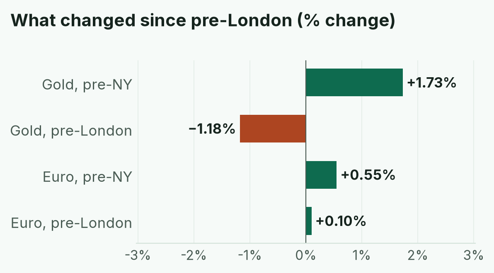
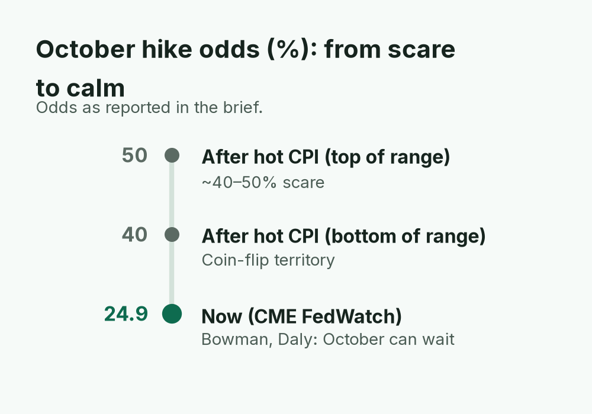
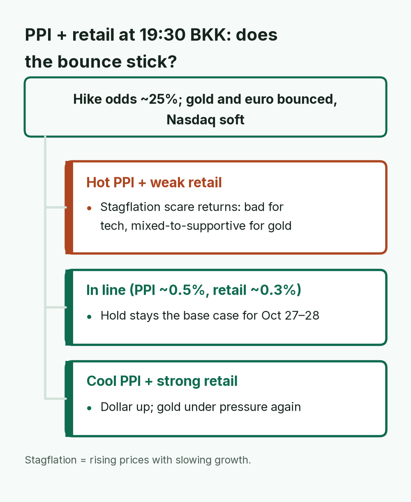
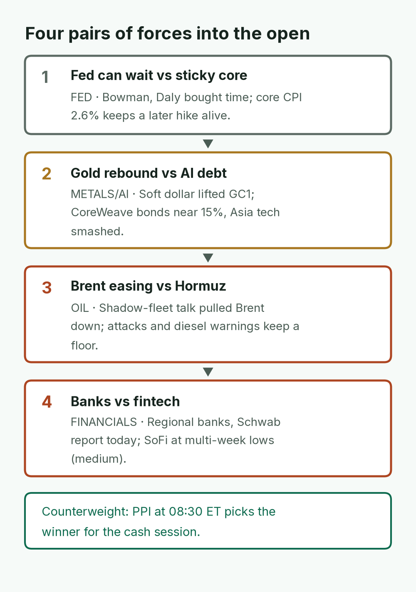
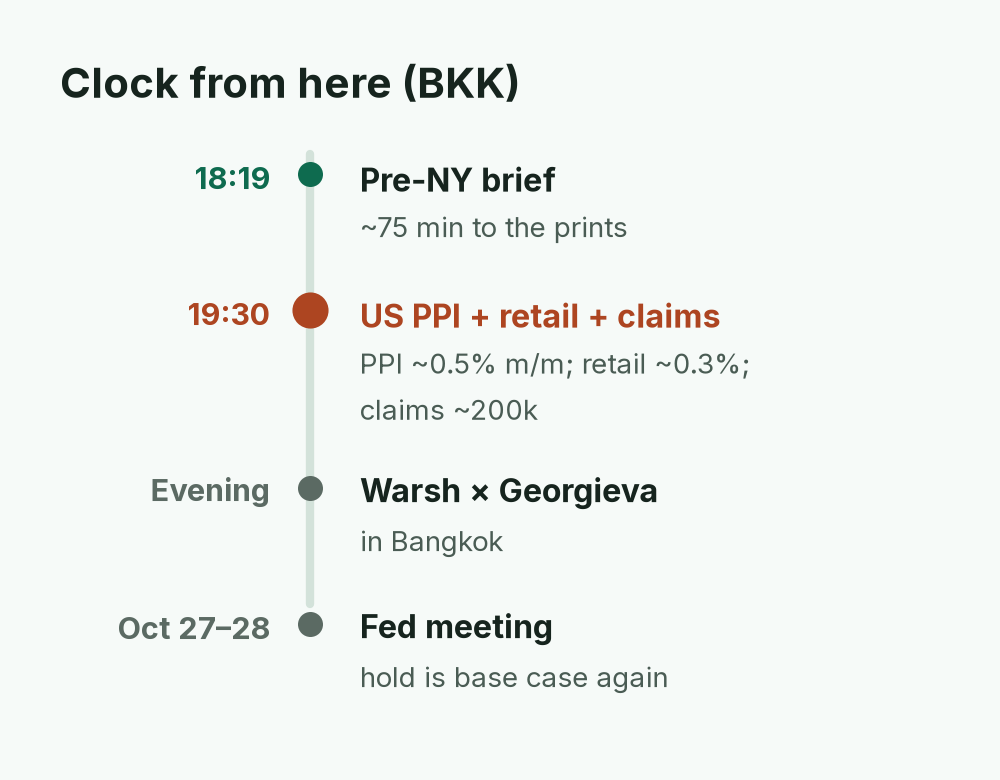
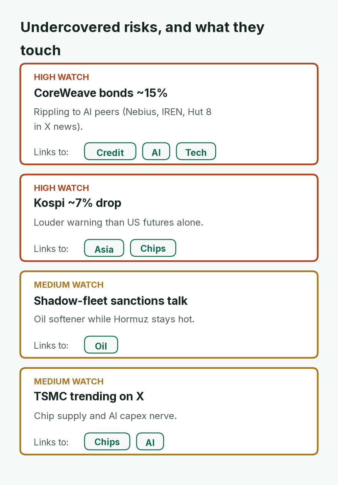
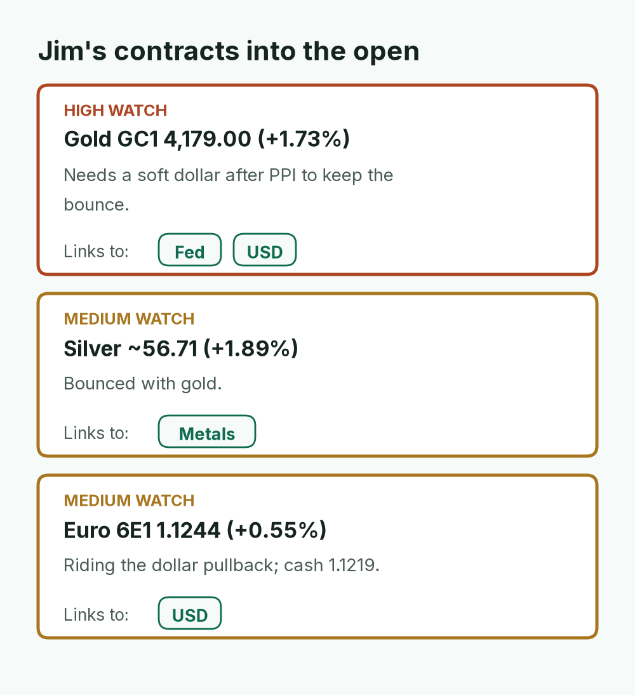
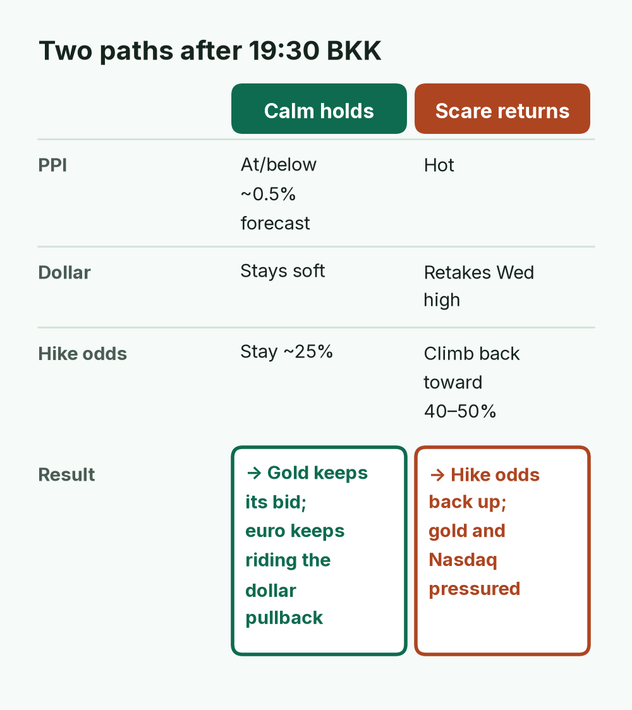

Faded hike odds and a softer dollar lifted gold, silver and the euro, while Asia's AI selloff left Nasdaq futures soft. Kospi is approximate (~−7%).
TODAY'S CALL
PPI, retail sales and jobless claims at 19:30 BKK (08:30 ET) decide whether the bounce sticks. Gold's bounce is real but PPI-fragile; don't fade the euro until the dollar retakes Wednesday's high.
WATCH (BKK)
19:30 BKK: US PPI + retail sales + jobless claims
Evening: Warsh × Georgieva (Bangkok)
Regional banks + Charles Schwab earnings
10Y ~5.09% vs 5.19% Wed close
GC1 4,179 / 6E1 1.1244

Gold flipped from −1.18% this morning to +1.73%, and the euro's gain grew from +0.10% to +0.55%, as October hike odds fell from ~40–50% to ~25%.
April · Market Intel, pre-NY · Thu Oct 15, 2026 · ~18:19 BKK / ~07:19 ET
Headline: the CPI scare cooled overnight. Yields and hike odds faded, gold bounced, and Asia tech got smashed. US futures open mixed with Nasdaq still soft.
PPI, retail sales and jobless claims land in about 75 minutes (08:30 ET). Those prints decide whether this bounce sticks.
1) Top signals (into US open)
Hike odds faded. Traders now put an October Fed rate hike at about 25% (CME FedWatch ~24.9%), down from the ~40–50% scare after hot CPI. The 10-year yield (what the US government pays to borrow) eased to ~5.09% from ~5.19%. (High: Reuters / CME FedWatch via secondary reports)
Gold and euro bounced.Gold (GC1) 4,179.00, +1.73%, at 07:09 ET; a softer dollar makes gold (which pays no interest) less painful to hold. Euro (6E1) 1.1244, +0.55%, ~06:04 ET as the dollar pulled back from Wednesday's 18-month high. (High)
US futures mixed; Asia tech wiped out. S&P 500 futures (ES) 7,747.75 (−0.29%), Nasdaq 100 futures (NQ) 29,792 (−1.29%), Dow futures 52,035 (+0.34%). Nikkei −4.9%, Kospi ~−7% on AI debt stress (CoreWeave). (High)
Oil eased; UK beat. Brent 104.49 (−1.48%), WTI 95.18 (+0.09%) on talk of easing sanctions on "shadow fleet" tankers; Hormuz risk remains. UK August GDP +0.1% vs −0.1% forecast. (Medium-high / High)

Hike odds roughly halved overnight, which is why gold and the euro bounced. PPI at 19:30 BKK can push them back up.
2) Why it matters
The market is no longer pricing an October hike as a coin flip. That is why gold bounced and the dollar cooled. Nasdaq is still soft because Asia’s AI selloff and CoreWeave-style debt stress did not go away overnight.
Mentor: when inflation is hot but officials say “not this meeting,” stocks often split. Rate-sensitive metals and the euro catch a bid. Growth tech stays under pressure until the next data clear the fog.
PPI and retail sales at 08:30 ET are the gate. Hot producer prices plus weak retail sales would revive the stagflation scare (rising prices with slowing growth). Cool PPI plus firm retail sales would lift the dollar and pressure gold again.

The 08:30 ET prints are the gate: they decide whether last night's calm holds or the hike scare comes back.
3) Chessboard
Fed can wait vs sticky core CPI. Bowman and Daly bought time. Core inflation at 2.6% (services still rising) keeps a later hike alive.
Gold rebound vs AI debt stress. Soft dollar helped GC1. CoreWeave bonds near 15% yields and Asia’s tech smash show lenders still fear AI borrowing.
Brent easing vs Hormuz risk. Shadow-fleet sanctions talk pulled Brent down. Attacks and diesel warnings (IEA, Beige Book) keep a floor under oil.
Banks vs fintech. Regional banks and Charles Schwab report today. SoFi hit multi-week lows after the CPI scare (X news summary; medium).

Each pair can flip on the 08:30 ET prints, so treat the overnight calm as provisional.
4) Leading indicators
08:30 ET / 19:30 BKK: US PPI (forecast ~0.5% month, ~5.3% year), retail sales (~0.3%), jobless claims (~200k).
Evening BKK: Fed Chair Warsh with IMF chief Georgieva.
Oct 27–28: Fed meeting. Hold is the base case again (~75% no-change on some prediction markets; CME hike ~25%).
Rule of thumb: hot PPI + weak retail = bad for tech, mixed-to-supportive for gold. Cool PPI + strong retail = dollar up, gold under pressure.

The three US prints land together at 19:30 BKK; Warsh later tonight can confirm or cool the reaction.
5) Undercovered
CoreWeave’s ~15% bond yields still rippling through AI peers (Nebius, IREN, Hut 8 in X news). CEO cites a large backlog; critics call financing stretched. (High for the yield level; medium for contagion)
Kospi −7% is a louder warning than US futures alone. (High)
Shadow-fleet sanctions talk as an oil softener while Hormuz stays hot. (Medium: Reuters via TipRanks)
TSMC as a live US X trend into the open. Chip supply and AI capex nerve, not fluff. (Medium: live trends)

AI debt stress is showing up in Asia first; Kospi's drop says the US Nasdaq dip may not be the whole story.
Euro (6E1) 1.1244, +0.55%. Riding the dollar’s pullback; cash EUR/USD 1.1219.

All three moved on the softer dollar and faded hike odds, so all three are exposed to a hot PPI.
Bottom line
Overnight the hike scare faded and gold got its bid back. Nasdaq is still paying for Asia’s AI selloff. For Jim: gold’s bounce is real but PPI-fragile. Don’t fade the euro until the dollar retakes Wednesday’s high. The 08:30 ET prints are the next referee.
Confidence: futures/cash levels from Markets Insider, CNBC @GC.1, WSJ Euro FX, Reuters yields/DXY are high. FedWatch ~24.9% and Fed-speak summaries are medium-high. X news summaries are medium until primary confirmation. Shadow-fleet item is medium.

Gold's bounce is real but PPI-fragile; don't fade the euro until the dollar retakes Wednesday's high.
Sent by April via briefs-by-april@mail.grokbot.com · Figures from April's brief; "—" = not reported. Not investment advice.